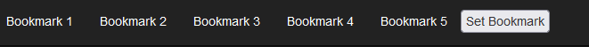
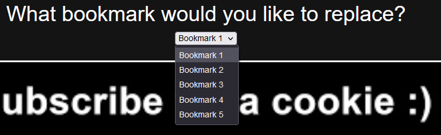
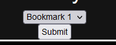

<body style="background-color: #141414; color: #FFF;">
  <h1 style="font-size: 75px;">Bookmarks</h1>
  <h1>Add a bookmark to quickly move around the MGCounts website.</h1>
  <br>
  
  
  
  <ol>
    <li style="font-size: 40px;">Click the set bookmark button.</li>
    <li style="font-size: 40px;">Select the bookmark you would like to replace.</li>
    <li style="font-size: 40px;">Click <a style="color: red;">Submit</a>.</li>
  </ol>
  <br>
  <h1>Still need help? <a href="./contact">Contact Us</a></h1>
</body>